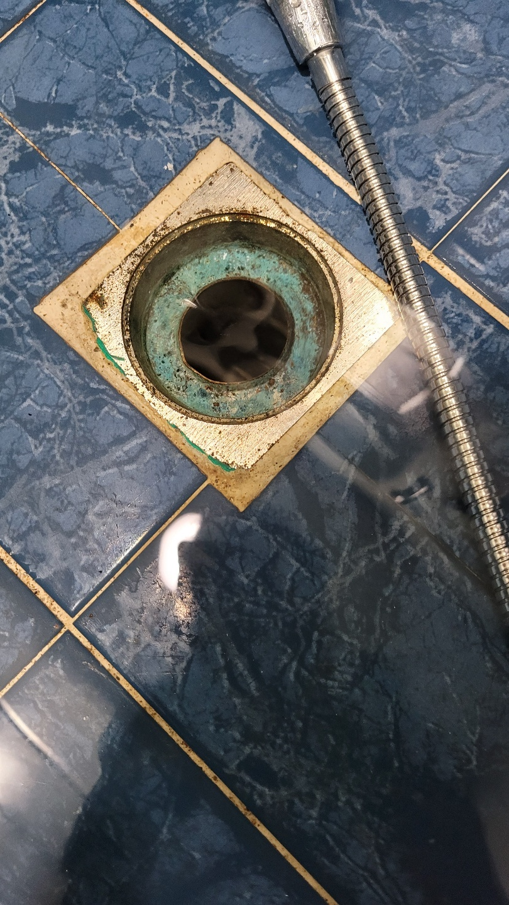
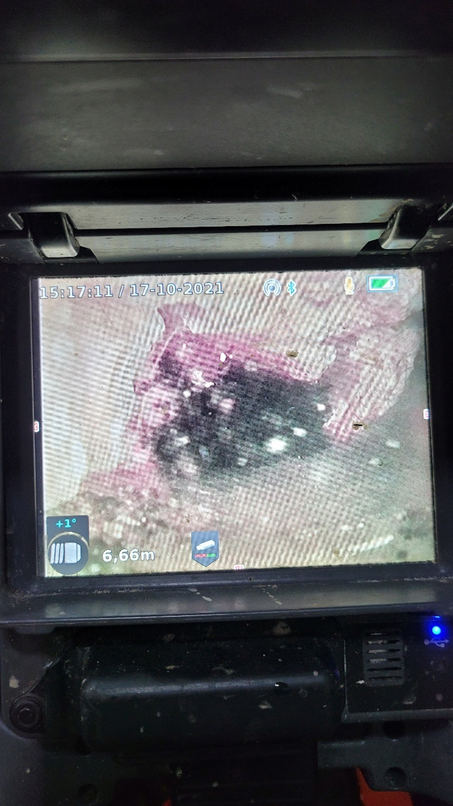
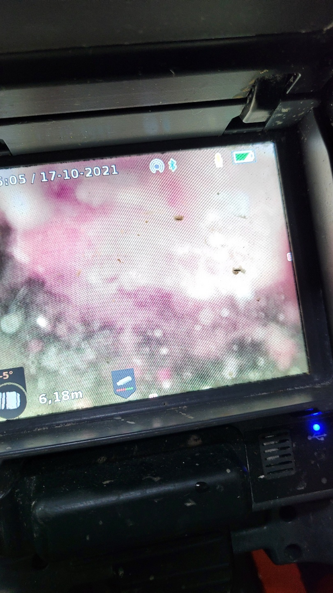
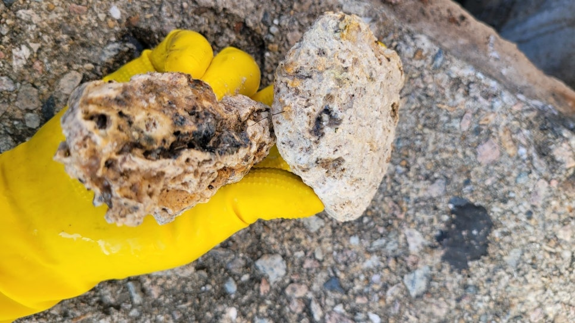

🏠 영통구 광교싱크대막힘 신동 원천동 싱크대냄새도 해결 현장 후기!
용인 싱크대막힘 전문 시공 후기

📋 작업 개요
- 위치: 용인
- 서비스 유형: 싱크대막힘, 하수구막힘, 배관막힘, 맨홀막힘, 역류해결, 고압세척
- 작업 일시: 2023. 2. 9. 23:31
- 업체명: 하수구수사대 (010-5615-2118)
🔍 문제 상황
안녕하세요. 하수구수사대입니다.
일반적인 가정집에서 어느날 갑자기 싱크대나 욕실이 막히게 되면 당황스러울 수밖에 없는데요.
이렇게 싱크대가 막히게 되면 주부님들께서는 상당히 불편함을 겪으실 수밖에 없게 되는 것입니다. 그래서 이러한 경우에는 혼자서 해결을 하려고 하지 마시고 즉시 전문가에게 의뢰를 해서 해결을 해야 하는 것입니다. 이번에 방문한 현장은 영통구 광교싱크대막힘 신동 원천동 싱크대냄새도 해결한 곳이었는데요. 지금부터 현장 후기를 알려드리도록 하겠습니다.
이번 고객님께서는 일반 다세대 주택에서 거주를 하고 계시던 분이었는데요 긴급하게 방문을 해서 현장을 둘러보았더니 맨홀 근처에서부터 이미 역류가 발생하고 있는 모습을 발견할 수 있었습니다. 아마도 이번에 연락을 주신 고객님의 세대 이외에도 이렇게 비슷한 경험을 하고 있는 곳이 있을 것으로 예상이 되었습니다.

🔎 원인 분석
💡 전문가 진단: 일반적인 가정집에서 어느날 갑자기 싱크대나 욕실이 막히게 되면 당황스러울 수밖에 없는데요.
보통 한 건물 내에 있는 배관의 경우는 모두 하나로 이어져 있는 구조입니다.
때문에 보통 이렇게 한 세대에서 문제를 겪고 있을 경우에는 그 세대만의 문제로 볼 것이 아니라 주변 세대에서도 동일한 문제를 겪게 될 수 있는 경우가 많이 있습니다. 현장 상황을 자세하게 파악하기 위해서 내부에 들어가서 싱크대의 하부장을 열어서 내시경을 연결했습니다. 배관의 내부는 보이지 않기 때문에 배관 내시경을 이용해서 확인을 하여야 하는 것입니다.
이물질이 막힌 곳이 발생한 지점과 내용물이 무엇인지에 대해서 확인을 해보았는데요. 보통 이러한 장비를 보유하고 있지 않는 업체라면 문제가 발생한 곳의 내부를 보지 않고 외관상으로만 보인 피해만 해결을 하기 때문에 2차 막힘이 또 발생하게 될 수 있습니다.
문의전화 010-4437-9128

🔧 작업 과정
그래서 내부 상태는 확인조차 못한 상태로 철수를 하게 될 텐데요.
이러한 경우 대부분은 며칠 지나지 않아서 또 동일한 상황이 발생할 위험이 따르게 되는 것입니다. 간단한 과정처럼 보이기는 하지만 배관 내시경을 통해서 내부의 원인을 정확하게 탐지하는 것은 매우 중요한 절차라고 할 수 있습니다. 그러므로 내부 상황을 보다 정확하게 인지를 하고 그에 알맞은 장비를 사용해서 해결을 해야 하는 것입니다.
그래서 이러한 절차는 시간이 소요되더라도 꼭 진행해야 하는 것이라고 할 수 있습니다. 영통구 광교싱크대막힘 신동 원천동 싱크대냄새도 해결을 위해서 전체적인 상황을 확인해 본 결과 이곳에서는 고압세척이 필요하다는 상황임을 확인하였습니다.
고압세척을 하는 이유를 알려드리겠습니다.
우리가 보통 싱크대나 화장실에 위치해 있는 배수구를 사용해 오다보면 투입한 이물질들이 배관 내에 가득 쌓이게 되는 상태가 될 수 있습니다. 보통 하수구 막힘이 발생한 현장의 경우 대부분은 동일한 현상이 발생하고 있는 것을 볼 수 있습니다. 이것은 주의를 한다고 하더라도 투입될 수 있는 각종 기름때나 머리카락 등이 주된 원인이 되는 것이라고 할 수 있습니다.
영통구 광교싱크대막힘 신동 원천동 싱크대냄새도 해결을 위해 막힘을 발생시키고 있던 이물질들을 모두 제거하는 작업을 하였습니다. 이렇게 한번 작업을 하고 나면 헌 배관의 경우라도 새 배관처럼 이용할 수 있게 되는 것입니다.
특히 빌라나 다세대주택 같은 경우에는


✅ 작업 완료
정기배관 관리가 적어서 문제가 발생한 이후에야 해결을 하게 되는 경우가 많이 있습니다. 그러므로 전문업체를 통해서 정기적인 관리를 하는 것이 이러한 문제발생을 예방하는데 도움이 될 수 있습니다.
전문업체의 경우는 전문장비를 가지고 원인 해결을 하기 때문에 2차막힘이 발생할 위험이 적고 보다 빠르게 해결을 할 수 있다는 장점이 있습니다. 배관 내시경을 통해서 내부를 계속 확인을 하면서 이물질들을 모두 깨끗하게 제거하였는데요 물이 시원하게 내려가는 것도 몇번 확인을 하면서 이번 막힘현장도 한번에 깔끔하게 해결을 하였습니다.




⚠️ 주방 싱크대 배관 막힘 예방 수칙
- ✅ 기름기가 묻은 식기나 프라이팬은 설거지 전 키친타올로 반드시 기름때를 닦아내세요.
- ✅ 주기적으로 싱크대 개수대에 뜨거운 물을 가득 받아 한 번에 내려 배관 내부 기름을 씻어내세요.
- ✅ 배수구 거름망을 미세한 필터로 사용하시고 음식물 찌꺼기가 틈으로 새어 들지 않게 관리하세요.
- ✅ 베이킹소다와 식초를 뜨거운 물과 함께 일주일에 한 번씩 부어주면 배관 살균과 막힘 예방에 좋습니다.
💡 핵심 정리
- 확실한 장비 작업(내시경 점검 및 샤프트 스케일링)으로 원인을 뿌리 뽑습니다.
- 작업 후 1년 이내에 동일한 부위 재발 시 100% 무상 A/S 서비스를 보장합니다.
- 서울 · 경기 · 인천 전 지역에 24시간 언제든 긴급 출동할 수 있도록 항시 대기 중입니다.
❓ 자주 묻는 질문 (FAQ)
🚨 용인 싱크대막힘 문제로 고민이신가요?
정확한 원인 진단과 확실한 시공으로 재발 없는 해결을 약속드립니다.
24시간 긴급 출동 | 서울 · 경기 · 인천 전지역 | 1년 내 재발 시 무상 A/S